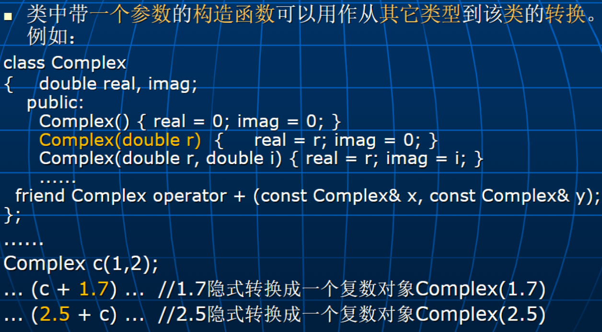
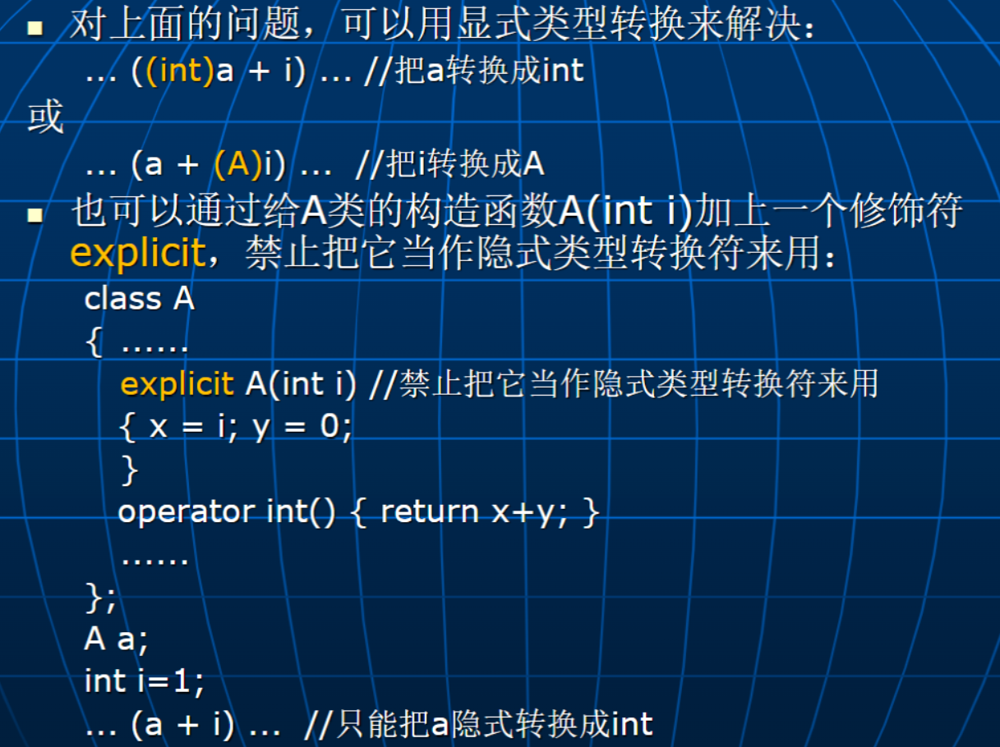

操作符重载
操作符重载概述
操作符重载可通过定义一个函数名为 “operator #”（ “#”代表某个可重载的操作符）的函数来实现，该函数可以作为：
一个类的非静态的成员函数（操作符 new 和 delete 的重载除外）。
一个全局（友元）函数。
以成员函数重载复数的“+”
1 2 3 4 5 6 7 8 9 10 11 12 13 class Complex public :operator + (const Conplex& x) const return tmp;Complex a (1.0 , 2.0 ) , b (3.0 , 4.0 ) , c ;
以全局函数重载复数的“+”
1 2 3 4 5 6 7 8 9 10 11 12 13 class Complex friend Complex operator + (const Complex& c1, const Complex& c2);operator + (const Complex& c1, const Complex& c2)1. real + c2. real;1. imag + c2. imag;return tmp;Complex a (1.0 , 2.0 ) , b (3.0 , 4.0 ) , c ;
操作符重载的基本原则
只能重载 C++语言中已有的操作符，不可臆造新的操作符。
可以重载 C++中除下列操作符外的所有操作符： “. ”， “.* ”，“?: ”，“:: ”，“sizeof ”
需要遵循已有操作符的语法：
不能改变操作数的个数。
原操作符的优先级和结合性不变。
尽量遵循已有操作符原来的语义：
双目操作符重载
作为成员函数重载
只需要提供一个参数，它对应第二个操作数（第一个操作数则由隐藏的参数 this 给出）。
复数的不等于和等于：
1 2 3 4 5 6 7 8 9 10 11 12 13 14 15 16 17 18 class Complex double real, imag;public :bool operator ==(const Complex& x) const return (real == x.real) && (imag == x.imag);bool operator !=(const Complex& x) const return (real != x.real) || (imag != x.imag);if (c1 == c2)
作为全局（友元）函数重载
1 2 3 4 5 6 7 8 9 10 11 12 13 14 15 16 17 18 19 20 21 22 23 24 25 26 27 28 29 class Complex double real, imag;public :Complex () { real = 0 ; imag = 0 ; }Complex (double r, double i) { real = r; imag = i; }friend Complex operator + (const Complex& c1, const Complex& c2);friend Complex operator + (const Complex& c, double d);friend Complex operator + (double d, const Complex& c);operator + (const Complex& c1, const Complex& c2)return Complex (c1. real+c2. real,c1. imag+c2. imag);operator + (const Complex& c, double d)return Complex (c.real+d,c.imag);operator + (double d, const Complex& c)return Complex (d+c.real,c.imag);Complex a (1 ,2 ) ,b (3 ,4 ) ,c1,c2,c3 ;21.5 ;10.2 + a;
单目操作符重载
作为成员函数重载
复数的取负操作
1 2 3 4 5 6 7 8 9 class Complex public :operator -() const { return Complex (-real, -imag); }Complex a (1 ,2 ) ,b ;
作为全局（友元）函数重载
判断复数是否为“零”
1 2 3 4 5 6 7 8 9 10 11 12 13 14 class Complex public :friend bool operator !(const Complex &c);bool operator !(const Complex &c)return (c.real == 0.0 ) && (c.imag == 0.0 );Complex a (1 ,2 ) ;if (!a)
操作符++和–的重载
单目操作符++（–）：
它们只有一个操作数，并且该操作数为一个左值表达式
它们是带副作用 的操作符：得到一个计算结果的同时会改变操作数的值！
为了能够区分++（–）的前置与后置用法， 可以为后置用法再写一个重载函数，该重载函数应有一个额外的 int 型参数 ，但函数体中不会使用该参数的值，它只是用于从形式上把后置的重载函数与前置的重载函数区分开。
1 2 3 4 5 6 7 8 9 10 11 12 13 14 15 16 17 18 19 20 21 22 23 24 class Counter int value;public :Counter () {value = 0 ;}operator ++()return *this ;const Counter operator ++(int ) this ;return tmp;
C++特殊操作符的重载
赋值操作符“=”
C++编译程序会为每个类定义一个隐式的 赋值操作，其行为是：逐个成员进行赋值操作。
对于普通成员，它采用常规的赋值操作。
对于成员对象，则调用该成员对象类的赋值操作进行成员对象的赋值操作。
直接赋值，问题 ：
1 2 3 String s1 ("xyz" ) ,s2 ("abcdefg" ) ;
s 1. str 原来指向的空间丢失了（内存泄露）
s 1 和 s 2 互相干扰
s 1 和 s 2 消亡时，"abcdefg"所在的空间将会被释放两次
解决 ：
1 2 3 4 5 6 7 8 9 10 11 12 class String operator = (const String& s)if (&s == this ) return *this ; delete []str; new char [s.len+1 ]; strcpy (str,s.str); return *this ;
上面的返回值类型能是 void 吗？为什么是 String 并且是它的引用？
为了允许下面的操作： s 1=(s 2=s 3) 和 (s 1=s 2)=s 3
如果有成员对象 ，自定义的赋值操作符重载函数不会自动去调用成员对象类的赋值操作，需要在自定义的赋值操作符重载函数中显式指出。
1 2 3 4 5 6 7 8 9 10 11 12 13 14 15 16 class A { ...... };class B int x,y;public :operator = (const B& b)if (&b == this ) return *this ;return *this ;
一般来讲，需要自定义拷贝构造函数的类通常也需要自定义赋值操作符重载函数。A a;
A b=a; //初始化，等价于：A b (a);，调用拷贝构造函数。b = a; //赋值，调用赋值操作符=重载函数。
赋值操作符重载存在的问题
当用于赋值的对象是一个临时或即将消亡 的对象时，目前的赋值操作符重载函数的实现效率有时是不高的。
1 2 3 4 5 6 7 8 9 10 11 A f () ; int main () A a ("abcd" ) ; f ();
-> 转移赋值操作符重载函数 move assignment operator
A& operator=(A&& x) //参数为右值引用类型：&&
当用于赋值的对象是一个临时的或即将消亡的对象时，
如果对象类中有转移赋值操作符重载函数，则会去调用它来实现对象的赋值。
否则将调用普通的赋值操作符重载函数来实现对象的赋值。 （注意：系统不会提供隐式的转移赋值操作符重载函数）
在转移赋值操作符重载函数中实现资源的转移:
1 2 3 4 5 6 7 A& operator =(A&& x)if (p != NULL ) delete []p; NULL ; return *this ;
数组元素访问操作符“[]”
对于由具有线性关系的元素所构成的对象，可通过重载下标操作符“[]”来实现对其元素的访问 。
1 2 3 4 5 6 7 8 9 10 11 12 13 class String int len;char *str;public :char &operator [](int i) { return str[i]; }char operator [](int i) const {return str[i];} String s ("abcd" ) ;0 ] = 'A' ;0 ];
1 2 3 4 5 6 7 8 9 10 11 12 13 14 15 16 17 18 19 20 21 22 23 24 25 26 27 28 29 30 31 32 33 34 35 36 37 38 39 class Vector private :int * data; int size; public :Vector (int s) : size (s) { data = new int [size]; Vector () { delete [] data; int & operator [](int j) { return data[j]; int getSize () const return size; class Matrix private :int row, col; public :Matrix (int r, int c) : row (r), col (c)new Vector*[row]; for (int i = 0 ; i < row; ++i)new Vector (col); Matrix ()for (int i = 0 ; i < row; ++i)delete p_data[i]; delete [] p_data; operator [](int i)return *p_data[i];
函数调用操作符“()”
在 C++中，把函数调用也作为一种操作符来看待：
操作符为 ()，操作数为函数名及各个实参，结果为函数返回值
例如：10+f (x, y)
1 2 3 4 5 6 7 8 9 10 11 12 13 14 15 16 17 18 19 20 21 22 23 24 class A int value;public :A (int i) { value = i; }int g () return value; }int operator () (int x,int y) {return x*y+value;A a (1 ) ; g () <<endl; 10 +a (10 ,20 ) << endl;void func (A& f) 10 +f (10 ,20 ) ...func (a);
函数对象除了具有一般函数的行为外，它还可以拥有状态。
1 2 3 4 5 6 7 8 9 10 11 12 13 14 class RandomNum unsigned int seed; public :RandomNum (unsigned int i) { seed = i; }unsigned int operator () () {25173 *seed+13849 )%65536 ; return seed;RandomNum random_num (1 ) ; random_num () ...
λ 表达式
首先，隐式定义一个类：
数据成员对应 λ 表达式中用到的环境变量（[…]），在构造函数中用环境变量对它们进行初始化。
按相应 λ 表达式的函数功能重载了函数调用操作符。
然后，创建上述类的一个临时对象（设为 obj）
最后，在使用上述 λ 表达式的地方用 obj 来替代：
作用于实参进行函数调用对于：cout << [...](int x)->int { ....... }(3); 替换成：cout << obj(3);
传给其它函数对于：f([...](int x)->int { ....... }); 替换成：f (obj);
间接类成员访问操作符“->” 智能指针
“->”为一个双目操作符：
第一个操作数为一个指向类或结构的指针。
第二个操作数为第一个操作数所指向的类或结构的成员。
可以针对某个类重载“->”操作符，这样就可以把该类的对象当指针来用，实现一种智能指针（smart pointers）
通过智能指针去访问它指向的对象成员之前能做一些额外的事情。（在操作符->重载函数中实现）
在 C++中，智能指针主要用于对动态对象的空间进行管理。在 C++标准库（基于模板实现）提供了一些智能指针类型，其中包括：
shared_ptr：带引用计数，利用它能够实现动态对象空间的自动回收。
unique_ptr：独占动态对象。
1 2 3 4 5 6 7 8 9 10 11 12 13 14 15 16 17 18 19 20 21 22 23 24 25 26 class A int x;public :A (int i) { x = i; }A (){ cout << "In A's destructor\n" ; }void f () shared_ptr<A> p1 (new A(1 )) ; f (); shared_ptr<A> p2 (new A(2 )) ; f (); nullptr ; f (); nullptr ; unique_ptr<A> p3 (new A(3 )) ; unique_ptr<A> p4 (new A(4 )) ; nullptr ; nullptr ;
操作符 new 与 delete 的重载
操作符 new 必须作为静态的成员函数来重载 （static 说明可以不写），其格式为：
void *operator new(size_t size);返回类型必须为 void *
参数 size 表示对象所需空间的大小，其类型为 size_t（unsigned int）
例：把动态对象初始化为全‘0’
1 2 3 4 5 6 7 8 9 10 11 12 13 #include <cstring> class A int x,y;public :void *operator new (size_t size) {void *p=malloc (size); memset (p,0 ,size); return p;
对于 new 的重载函数，除了对象空间大小参数以外，它也可以带有其它参数：
void *operator new (size_t size,…);
对带有其它参数的 new 重载函数，其使用格式为：
p = new (…) A (…);
前者… 表示提供给 new 重载函数的其它参数
后者… 表示提供给 A 类构造函数的参数
例：在非“堆区”为动态对象分配空间
1 2 3 4 5 6 7 8 9 10 11 12 13 14 15 #include <cstring> class A int x,y;public :A (int i, int j) { x=i; y=j; }void *operator new (size_t size, void *p) { return p; }char buf[sizeof (A)];new (buf) A (1 ,2 );A ();
操作符 delete 也必须作为静态的成员函数来重载 （static 说明可以不写），其格式为：
void operator delete (void *p, size_t size);返回类型必须为 void。
第一个参数类型为 void *，指向对象的内存空间。
第二个参数可有可无，如果有，则必须是 size_t 类型。
重载后，操作符 delete 的使用格式与未重载的相同。
例：重载操作符 new 与 delete 来管理程序中某类动态对象的堆空间。
1 2 3 4 5 6 7 8 9 10 11 12 13 14 15 16 17 18 19 20 21 22 23 24 25 26 27 28 29 30 31 32 33 34 35 36 37 #include <cstring> class A public :static void *operator new (size_t size) static void operator delete (void *p) private :static A *p_free; NULL ;const int NUM=32 ;void *A::operator new (size_t size) if (p_free == NULL ) malloc (size*NUM); for (int i=0 ; i<NUM-1 ; i++)+1 ];-1 ].next = NULL ;memset (p,0 ,size); return p;void A::operator delete (void *p) new A;new A;delete q1;
C++标准库（基于模板实现）提供了一个函数 make_shared，它能创建自带引用计数的动态对象。例如：
1 2 3 4 5 6 7 8 9 10 11 12 13 14 15 16 class A int x;public :A (int i) { x = i; }void f () make_shared <A>(1 );f (); make_shared <A>(2 );nullptr ; nullptr ;
自定义类型转换操作符

歧义问题：
1 2 3 4 5 6 7 8 9 10 11 12 13 14 class A int x,y;public :A () { x = 0 ; y = 0 ; }A (int i) { x = i; y = 0 ; }A (int i,int j) { x = i; y = j; }operator int () return x+y; }friend A operator +(const A &a1, const A &a2);int i=1 ;
